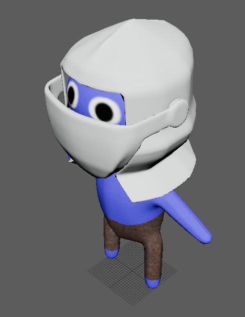
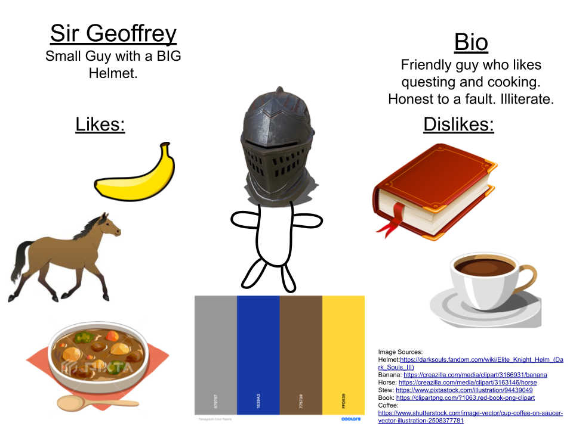
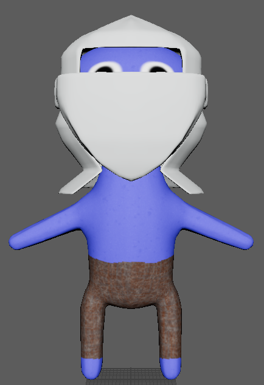
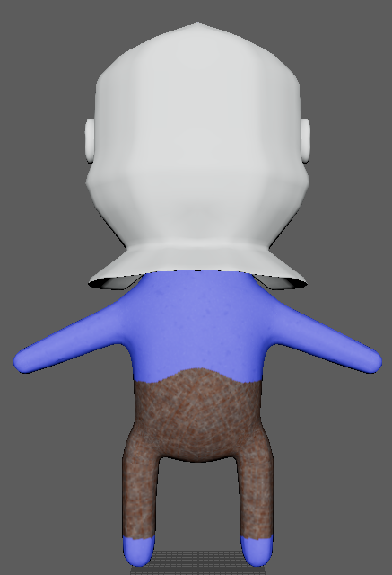
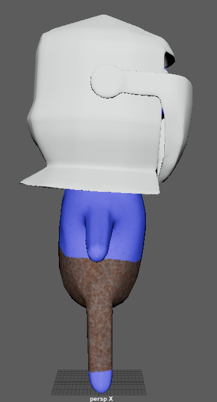
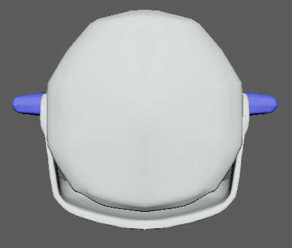
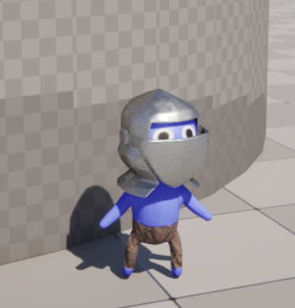

The final project for my 3D Asset Pipeline course.
The class voted to make custom characters in the style of Tamagotchi.
Sir Geoffry is a small blue creature who wears an oversized knight helmet.
The first part of the project was to create a mood board showing the character, color scheme, as well as their likes and dislikes.
Next, the character was modeled, UV unwrapped and rigged in Autodesk Maya.
The textures were created in Adobe Substance Painter.
The final model was exported to Unreal Engine 5, where it was used to create a child object of the default character controller.
The animations from the default character controller were then retargeted to the custom character.

The initial moodboard for Sir Geoffry.

Front view of Sir Geoffry.

Back view of Sir Geoffry.

Side view of Sir Geoffry.

Birds-eye view of Sir Geoffry.

Sir Geoffry in Unreal Engine 5.